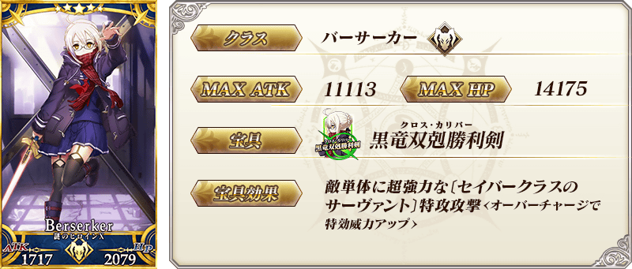
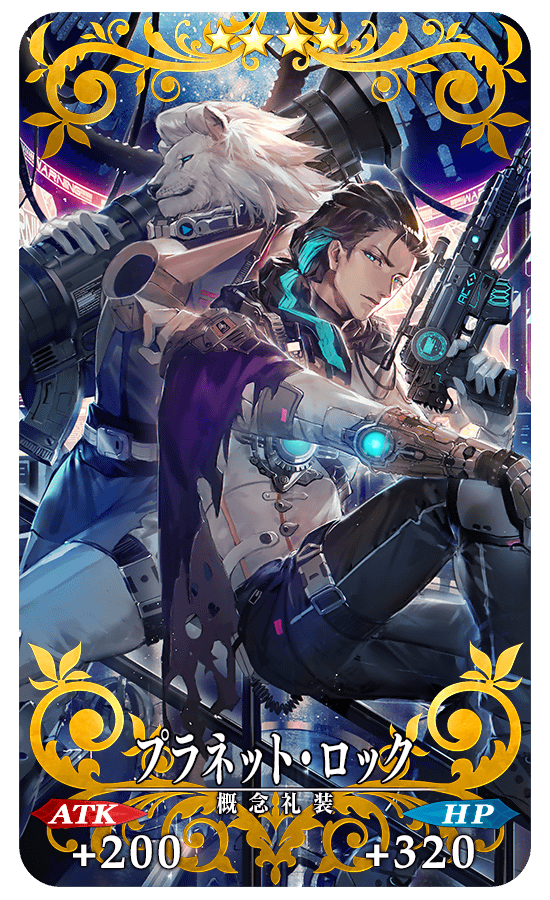
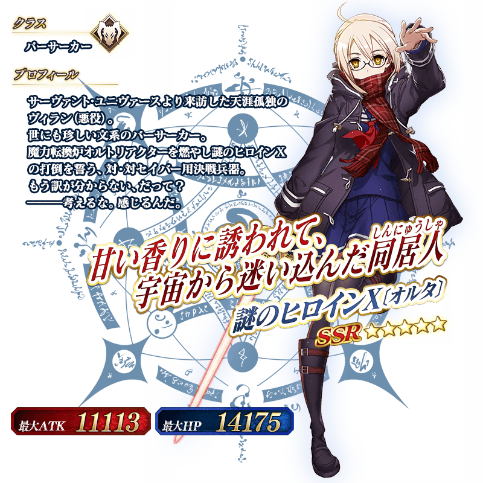

◆「Saber Wars２Pick Up2召喚」期間◆
期間:2019年11月6日(三) 17:00～11月20日(三) 11:59
舉辦期間限定「Saber Wars２Pick Up2召喚」！
※未通過終局特異點的狀態也能進行「Saber Wars２Pick Up2召喚」。
期間限定從者「★5(SSR)謎之女主角X〔Alter〕」自期間限定活動「Saber Wars２ ～邁向初始的宇宙～」登場！
本次在上述再加上「★4(SR)柳生但馬守宗矩」Pick Up！
詳情請在聖晶石召喚畫面左下的召喚詳細確認。
「★5(SSR)プリンセス・オブ・アンコ」「★4(SR)プラネット・ロック」「★3(R)文武一道」做為期間限定概念禮裝登場！
裝備上述3種概念禮裝的話，在期間限定活動「Saber Wars２ ～邁向初始的宇宙～」中會提升活動道具的掉落獲得數。
◆有關從者的注意◆
※「★5(SSR)謎之女主角X〔Alter〕」在Pick Up期間結束後不會追加到故事召喚。
※Pick Up期間中，「★4(SR)柳生但馬守宗矩」就算通過各章前也能入手。
※「★4(SR)柳生但馬守宗矩」在Pick Up期間結束後仍會在故事召喚被抽出。
◆有關概念禮裝的注意◆
※「★3(R)文武一道」在Pick Up期間中，也能靠友情點數召喚獲得。
※請注意自友情點數召喚抽出的「★3(R)文武一道」在自動變還設定登錄★3(R)概念禮裝的情況，會變成自動變還的對象。
Pick Up期間中，期間限定從者、Pick Up從者、期間限定概念禮裝的出現機率提升！
11次召喚中確定1張★4(SR)以上和確定1位★3(R)以上的從者！ ※確定★4(SR)以上包含從者和概念禮裝。 ※本頁面皆為開發中圖片。會有與實際圖片相異的情況。


 ※上述「★4(SR)柳生但馬守宗矩」的卡面為靈基再臨第2階段。
※上述「★4(SR)柳生但馬守宗矩」的卡面為靈基再臨第2階段。


|
★★★★★SSR
|

|  |
★★★★SR |

|
★★★R |

介紹「★5(SSR)謎之女主角X〔Alter〕」「★4(SR)柳生但馬守宗矩」的寶具演出！
在「Fate/Grand Order」官方網站內的公告中，以影片公開寶具演出，敬請確認。
其他還有，期間限定活動「Saber Wars２ ～邁向初始的宇宙～」和期間限定「Saber Wars２Pick Up召喚」同時舉辦！
關於詳情，請自下述橫幅確認。
■「Saber Wars２ ～邁向初始的宇宙～」詳細情報

■「Saber Wars２Pick Up召喚」詳細情報